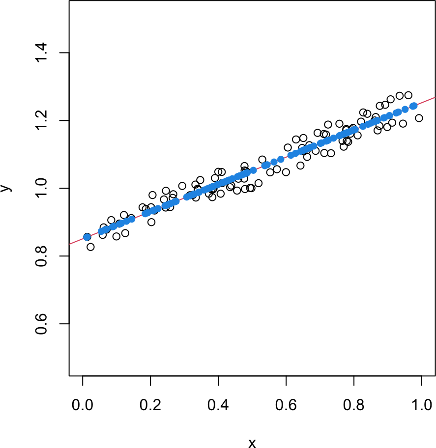
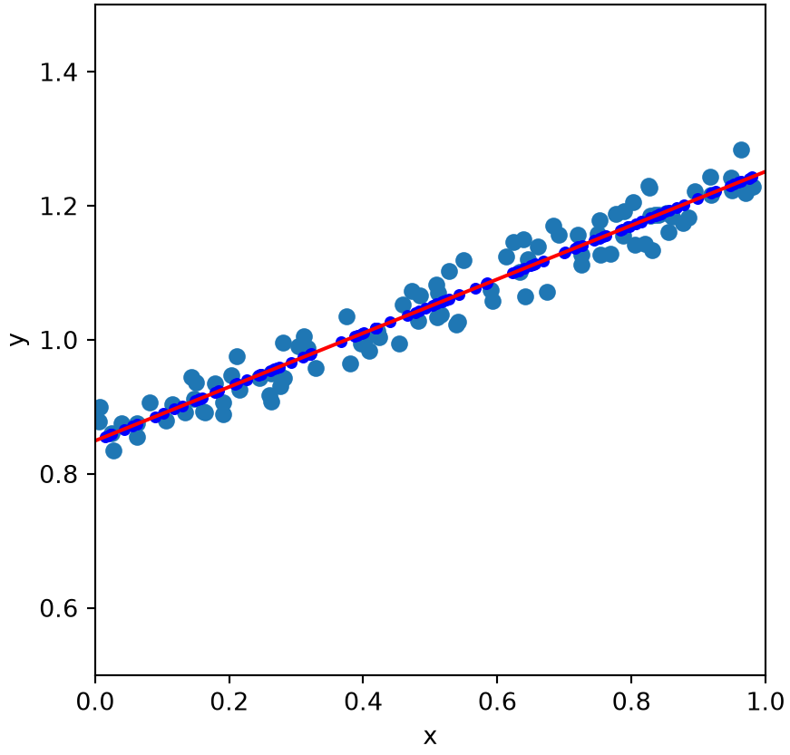
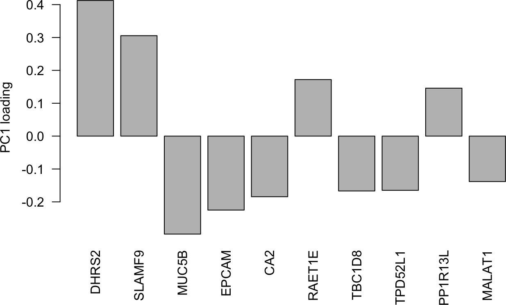
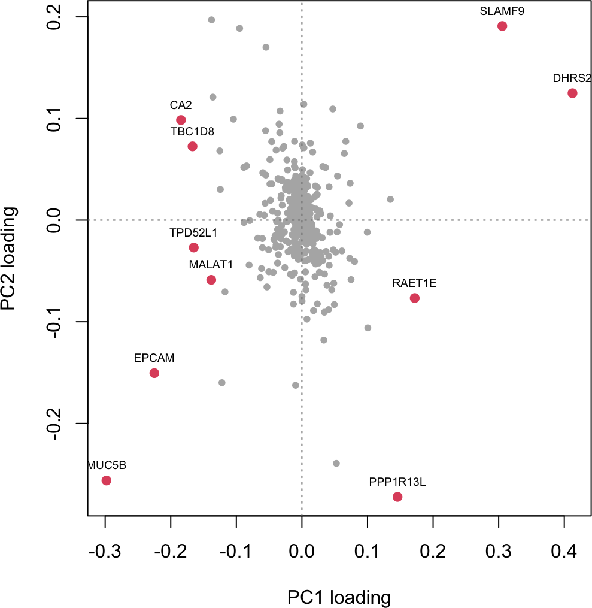
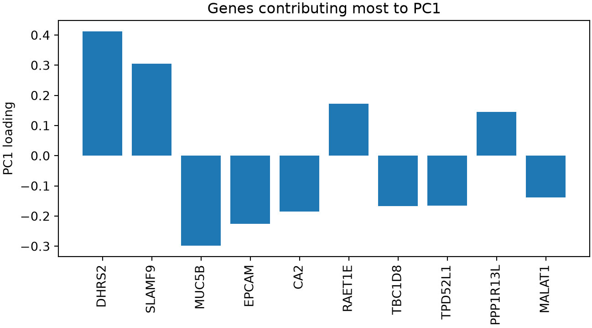
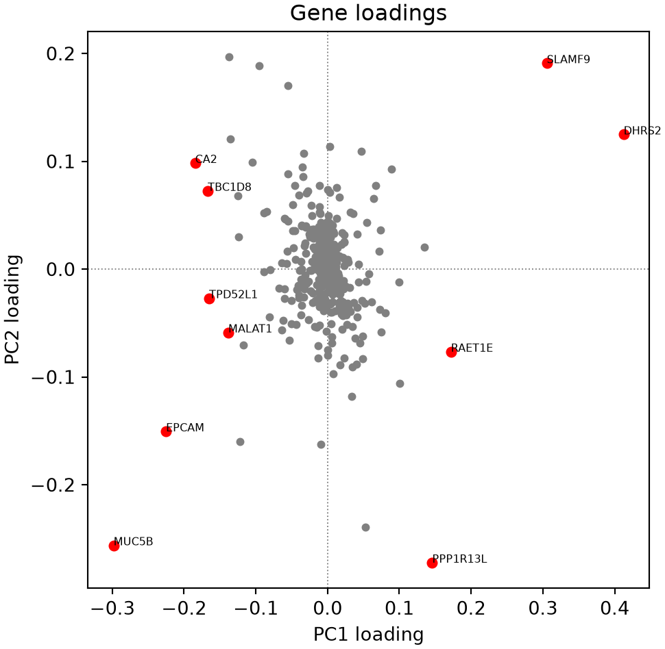
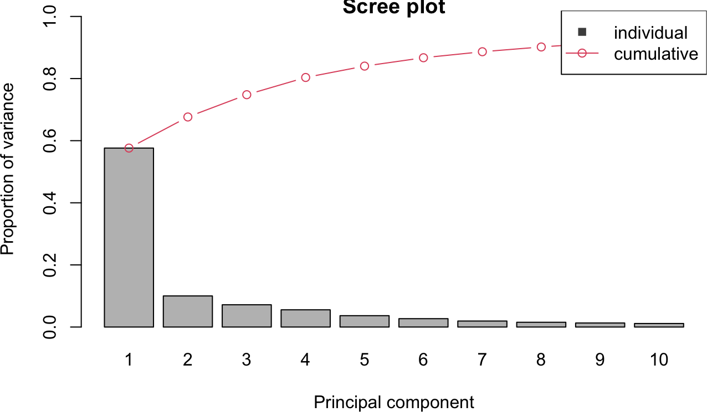
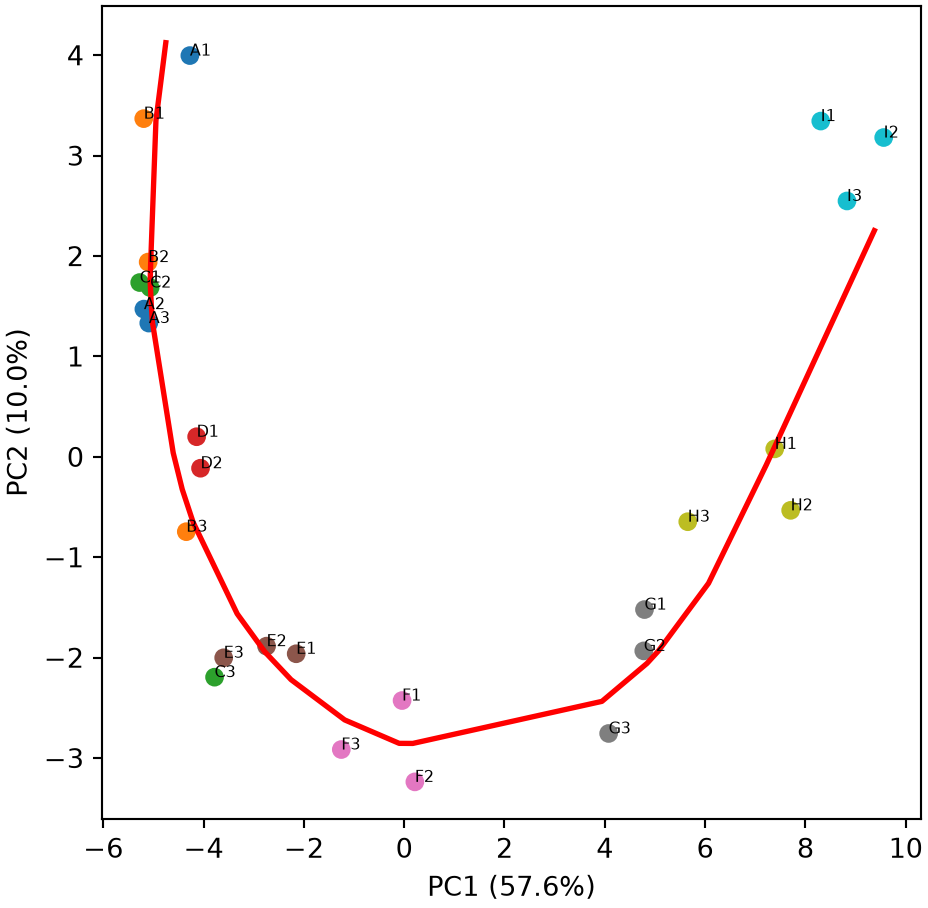
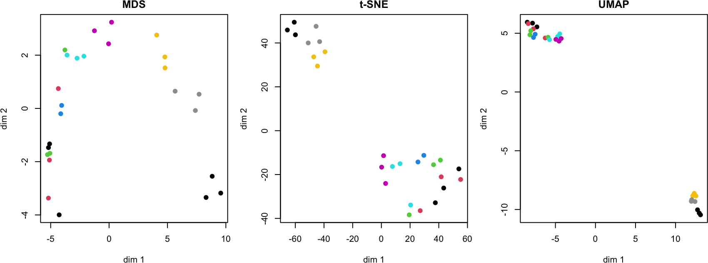
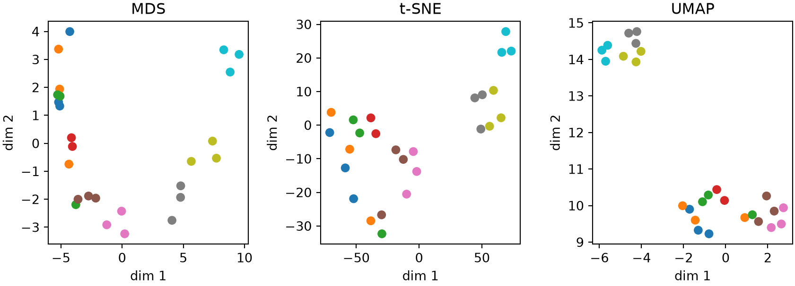

Biological data are often high-dimensional: a gene-expression experiment measures thousands of genes across many samples. To visualize and interpret such data we reduce their dimensionality, mapping each sample to a few coordinates that capture most of the structure. This chapter builds principal component analysis (PCA) from scratch, uses it on a real gene-expression dataset, and then demonstrates nonlinear embeddings (MDS, t-SNE, and UMAP).
10A.1 Projecting data onto a line
The simplest reduction takes two-dimensional points and describes them by a single number. Consider 100 points scattered in a narrow, tilted strip.
R implementation
set.seed(1)x <-runif(100); y <-0.4* x +0.8+0.1*runif(100)data1 <-data.frame(x = x, y = y)# fit a line, then project each point onto itmodel <-lm(y ~ x, data = data1)x0 <-c(0, coef(model)[1]) # a point on the linedir <-c(1, coef(model)[2]); dir <- dir /sqrt(sum(dir^2)) # unit directionproj <-as.matrix(data1) %*% dir -sum(x0 * dir) # 1D coordinate along the lineprojected <-t(sapply(proj, function(p) p * dir + x0)) # back to 2Dplot(data1$x, data1$y, xlab ="x", ylab ="y", xlim =c(0, 1), ylim =c(0.5, 1.5), asp =1)abline(model, col =2)points(projected[, 1], projected[, 2], pch =16, col =4)

Python implementation
import numpy as npimport matplotlib.pyplot as pltrng = np.random.default_rng(1)x = rng.uniform(size=100); y =0.4* x +0.8+0.1* rng.uniform(size=100)data1 = np.column_stack([x, y])# fit a line, then project each point onto itb1, b0 = np.polyfit(x, y, 1)x0 = np.array([0, b0])d = np.array([1, b1]); d = d / np.linalg.norm(d) # unit directionproj = data1 @ d - x0 @ d # 1D coordinate along the lineprojected = np.outer(proj, d) + x0 # back to 2Dplt.figure(figsize=(5, 5))plt.scatter(x, y)xs = np.array([0, 1]); plt.plot(xs, b1 * xs + b0, color="red")plt.scatter(projected[:, 0], projected[:, 1], color="blue", s=15)plt.gca().set_aspect("equal"); plt.xlabel("x"); plt.ylabel("y")plt.xlim(0, 1); plt.ylim(0.5, 1.5); plt.show()
(0.0, 1.0)
(0.5, 1.5)

Each blue point is the closest position on the line to its original point. The single coordinate along the line (the projection) keeps most of the spread of the data, since the points barely deviate from the line. PCA generalizes this idea: it finds the directions of largest variance automatically, without being told to use a regression line, and works in any number of dimensions.
10A.2 Principal component analysis from scratch
PCA re-expresses the data in a new orthogonal basis, the principal components, ordered by how much variance they capture (Pearson 1901; Hotelling 1933). The recipe is: center the data, then find the directions along which it varies most. Those directions are the eigenvectors of the covariance matrix, and their eigenvalues give the variance captured. We implement it two equivalent ways: eigen-decomposition of the covariance matrix, and the singular value decomposition (SVD) of the centered data, which is numerically preferable and much cheaper when there are more features than samples.
NoteRecipe 10A.2.1
Objective. Compute principal components from scratch and confirm two routes agree.
Model. The input is a data matrix X with samples in rows and features in columns.
Method. Principal component analysis two equivalent ways: the eigen-decomposition of the covariance matrix, and the singular value decomposition of the centered data.
Test. The 100x2 “strip” data from 10A.1 (points scattered along a line); centering only, no scaling.
Show. The component variances from both routes, and the PC1 direction drawn on the strip data.
Verification. The two routes return identical variances, and on the strip data PC1 carries almost all the variance and points along the strip, recovering the regression direction of 10A.1.
R implementation
# PCA from scratch: "eigen" (covariance eigen-decomposition) or "svd" (of centered data)pca <-function(X, method ="svd") { Xc <-scale(X, center =TRUE, scale =FALSE) # center each feature n <-nrow(X)if (method =="eigen") { e <-eigen(cov(Xc)); values <- e$values; loadings <- e$vectors } else { s <-svd(Xc); values <- s$d^2/ (n -1); loadings <- s$v }list(values = values, loadings = loadings, scores = Xc %*% loadings)}# the two routes agree (on the strip data from 10A.1)X2 <-as.matrix(data1)round(rbind(eigen =pca(X2, "eigen")$values, svd =pca(X2, "svd")$values), 5)
[,1] [,2]
eigen 0.08326 0.00064
svd 0.08326 0.00064
Python implementation
# PCA from scratch: "eigen" (covariance eigen-decomposition) or "svd" (of centered data)def pca(X, method="svd"): Xc = X - X.mean(0) # center each feature n =len(X)if method =="eigen": vals, vecs = np.linalg.eigh(np.cov(Xc, rowvar=False)) order = np.argsort(vals)[::-1] values, loadings = vals[order], vecs[:, order]else: U, s, Vt = np.linalg.svd(Xc, full_matrices=False) values, loadings = s**2/ (n -1), Vt.Treturn {"values": values, "loadings": loadings, "scores": Xc @ loadings}# the two routes agree (on the strip data from 10A.1)print(np.round(np.vstack([pca(data1, "eigen")["values"], pca(data1, "svd")["values"]]), 5))
[[0.09677 0.00064]
[0.09677 0.00064]]
Both routes return the same variances. For the strip data the first principal component carries almost all the variance and points along the strip, recovering the direction we fit by hand in the previous section.
10A.3 Interpreting components with loadings
We now apply PCA to a real dataset: expression of 500 genes measured across 26 samples spanning nine experimental conditions (A through I). The samples are the observations and the genes are the features, so we transpose the table. The loadings (the columns of the eigenvector matrix) say how much each gene contributes to each component; inspecting the largest loadings tells us which genes drive the dominant patterns.
R implementation
exp_data <-read.csv("10-high-dim-data/data/exp_data.csv", row.names =1)X <-t(as.matrix(exp_data)) # 26 samples x 500 genesgenes <-colnames(X)res <-pca(X) # used again in 10A.4top <-order(abs(res$loadings[, 1]), decreasing =TRUE)[1:10] # top PC1 genesbarplot(res$loadings[top, 1], names.arg = genes[top], las =2, ylab ="PC1 loading")

# loadings plot: every gene's PC1 vs PC2 contribution, with the top PC1 genes markedplot(res$loadings[, 1], res$loadings[, 2], pch =20, col ="grey70",xlab ="PC1 loading", ylab ="PC2 loading")abline(h =0, v =0, lty =3, col ="grey50")points(res$loadings[top, 1], res$loadings[top, 2], pch =19, col =2)text(res$loadings[top, 1], res$loadings[top, 2], labels = genes[top], pos =3, cex =0.6)

Python implementation
import pandas as pdexp_data = pd.read_csv("10-high-dim-data/data/exp_data.csv", index_col=0)X = exp_data.values.T # 26 samples x 500 genesgenes = exp_data.index.to_numpy()samples = exp_data.columns.to_numpy()res = pca(X) # used again in 10A.4top = np.argsort(np.abs(res["loadings"][:, 0]))[::-1][:10] # top PC1 genesplt.figure(figsize=(7, 4))plt.bar(genes[top], res["loadings"][top, 0])plt.xticks(rotation=90); plt.ylabel("PC1 loading")plt.title("Genes contributing most to PC1"); plt.tight_layout(); plt.show()

# loadings plot: every gene's PC1 vs PC2 contribution, with the top PC1 genes markedplt.figure(figsize=(5.5, 5.5))plt.scatter(res["loadings"][:, 0], res["loadings"][:, 1], color="grey", s=12)plt.axhline(0, color="grey", lw=0.7, ls=":"); plt.axvline(0, color="grey", lw=0.7, ls=":")plt.scatter(res["loadings"][top, 0], res["loadings"][top, 1], color="red", s=25)for i in top: plt.text(res["loadings"][i, 0], res["loadings"][i, 1], genes[i], fontsize=6)plt.xlabel("PC1 loading"); plt.ylabel("PC2 loading"); plt.title("Gene loadings"); plt.show()

Each principal component is a weighted combination of all 500 genes. The handful of genes with the largest loadings dominate that component, so PC1 can be read as the coordinated expression pattern of these top genes, the axis along which the samples vary most. Plotting each gene’s PC1 and PC2 loadings together shows most of the 500 genes clustered near the origin, contributing little to either component, while the ten genes highlighted above stand out along PC1; several of them also carry a substantial PC2 loading, showing that a gene’s influence is not always confined to a single component.
10A.4 Visualizing the samples
With the same PCA, we look at the sample side. The scree plot shows how much variance each component explains, guiding how many to keep. Projecting the samples onto the first two components then reveals their structure.
NoteRecipe 10A.4.1
Objective. Project samples onto their leading principal components and summarize the trend with a principal curve.
Model. The input is the PCA scores of 26 samples by 500 genes, projected onto the first two components; each sample is labeled by its condition (A through I).
Method. A PCA scree plot (variance explained per component) with a 2D PC1-PC2 projection, and a fitted Hastie-Stuetzle principal curve.
Test. The gene-expression data (26 samples x 500 genes), colored by condition.
Show. A scree plot and the PC1-PC2 scatter colored by condition, with the fitted principal curve.
Verification. PC1 explains most of the variance, the samples fall in an ordered arc from condition A to I, and the principal curve summarizes that progression as a 1D coordinate per sample.
R implementation
# scree plot: proportion of variance explainedvar_prop <- res$values /sum(res$values)cum_prop <-cumsum(var_prop[1:10])barplot(var_prop[1:10], names.arg =1:10, xlab ="Principal component",ylab ="Proportion of variance", main ="Scree plot", ylim =c(0, max(cum_prop) *1.1))lines(seq_along(var_prop[1:10]) *1.2-0.5, cum_prop, type ="b", col =2)legend("topright", c("individual", "cumulative"), col =c("grey30", 2), pch =c(15, 1), lty =c(0, 1))

# project onto PC1-PC2, colored by condition, with a fitted principal curvelibrary(princurve)cond <-factor(substr(rownames(X), 1, 1))pc <- res$scores[, 1:2]pc_lab <-sprintf("PC%d (%.1f%%)", 1:2, var_prop[1:2] *100)fit <-principal_curve(pc) # Hastie-Stuetzle principal curve (princurve package)plot(pc[, 1], pc[, 2], col = cond, pch =19, xlab = pc_lab[1], ylab = pc_lab[2])text(pc[, 1], pc[, 2], labels =rownames(X), pos =3, cex =0.6)lines(fit$s[fit$ord, ], col ="red", lwd =2)
# project onto PC1-PC2, colored by condition, with a fitted principal curvefrom pcurvepy2 import PrincipalCurvecond = np.array([s[0] for s in samples])pc = res["scores"][:, :2]pc_lab = [f"PC{i +1} ({v *100:.1f}%)"for i, v inenumerate(var_prop[:2])]fit = PrincipalCurve() # Python port of R's princurve, same Hastie-Stuetzle algorithmfit.fit(pc, param_s=20) # R's princurve auto-tunes its spline smoothing by# cross-validation; pcurvepy2 needs it supplied directly,# and the unsmoothed default overfits this small datasetfit.project_to_curve(pc, points=fit.points, stretch=2.0) # match R's default curve-end stretch
curve = fit.points_interp[fit.order]codes = {c: i for i, c inenumerate(sorted(set(cond)))}plt.figure(figsize=(5.5, 5.5))plt.scatter(pc[:, 0], pc[:, 1], c=[codes[c] for c in cond], cmap="tab10")for i, name inenumerate(samples): plt.text(pc[i, 0], pc[i, 1], name, fontsize=6)plt.plot(curve[:, 0], curve[:, 1], color="red", lw=2)plt.xlabel(pc_lab[0]); plt.ylabel(pc_lab[1]); plt.show()

The first component alone explains most of the variance, and the samples fall into an ordered arc from condition A to I in the PC1-PC2 plane. Fitting a principal curve, a smooth one-dimensional path that threads through the middle of the points (Hastie and Stuetzle 1989), summarizes this trajectory: the experiment traces a continuous progression of gene-expression states, and the position along the curve is a natural one-dimensional coordinate for each sample. Rather than implementing the fitting algorithm (project, order, smooth, repeat) from scratch, we use the R princurve package and its Python port pcurvepy2, both established implementations of the same Hastie-Stuetzle procedure.
10A.5 Nonlinear embeddings: MDS, t-SNE, and UMAP
PCA is a linear projection. When the data lie on a curved manifold, nonlinear methods can separate structure that PCA blurs. We demonstrate three, using established libraries rather than building them from scratch. Multidimensional scaling (MDS) places points in 2D so their pairwise distances match the high-dimensional distances as closely as possible (Torgerson 1952). t-SNE(Maaten and Hinton 2008) and UMAP(McInnes et al. 2018) instead preserve local neighborhoods, and are the standard tools for visualizing high-dimensional biological data, at the cost of being stochastic and distorting global distances.
NoteRecipe 10A.5.1
Objective. Embed high-dimensional samples in 2D three different ways and compare what each preserves.
Model. The input is the same 26 samples by 500 genes, colored by condition.
Method. Three 2D nonlinear embeddings: classical (Torgerson) multidimensional scaling, t-SNE, and UMAP.
Show. The MDS, t-SNE, and UMAP 2D embeddings, points colored by condition.
Verification. All three separate the nine conditions; MDS lays them along the A-to-I progression (it preserves global distances), while t-SNE and UMAP emphasize tight local clusters whose between-cluster distances are not meaningful.
R implementation
library(Rtsne); library(uwot)set.seed(1)emb_mds <-cmdscale(dist(X), k =2)emb_tsne <-Rtsne(X, dims =2, perplexity =5, check_duplicates =FALSE)$Yemb_umap <-umap(X, n_components =2, n_neighbors =5)par(mfrow =c(1, 3), mar =c(4, 4, 2, 1))plot(emb_mds, col = cond, pch =19, xlab ="dim 1", ylab ="dim 2", main ="MDS")plot(emb_tsne, col = cond, pch =19, xlab ="dim 1", ylab ="dim 2", main ="t-SNE")plot(emb_umap, col = cond, pch =19, xlab ="dim 1", ylab ="dim 2", main ="UMAP")

Python implementation
import warnings; warnings.filterwarnings("ignore")from scipy.spatial.distance import pdist, squareformfrom sklearn.decomposition import KernelPCAfrom sklearn.manifold import TSNEimport umap# classical (Torgerson) MDS is eigen-decomposition of the Gower-centered squared-distance# matrix, equivalent to KernelPCA on that matrix as a precomputed kernel; this matches R's# cmdscale, unlike sklearn.manifold.MDS, which instead runs the iterative SMACOF algorithm# and gives a materially different embeddingD2 = squareform(pdist(X)) **2n = D2.shape[0]; J = np.eye(n) - np.ones((n, n)) / nemb_mds = KernelPCA(n_components=2, kernel="precomputed").fit_transform(-0.5* J @ D2 @ J)emb_tsne = TSNE(n_components=2, perplexity=5, random_state=1).fit_transform(X)emb_umap = umap.UMAP(n_components=2, n_neighbors=5, random_state=1).fit_transform(X)col = [codes[c] for c in cond]fig, axs = plt.subplots(1, 3, figsize=(9, 3.4))for ax, (name, e) inzip(axs, [("MDS", emb_mds), ("t-SNE", emb_tsne), ("UMAP", emb_umap)]): ax.scatter(e[:, 0], e[:, 1], c=col, cmap="tab10") ax.set(xlabel="dim 1", ylabel="dim 2", title=name)plt.tight_layout(); plt.show()

All three separate the nine conditions, and MDS, like PCA, lays them out along the A-to-I progression because it preserves global distances (R’s cmdscale and the classical MDS computed above are the same algorithm, so the two panels agree up to rotation and reflection). t-SNE and UMAP emphasize tight local clusters (the replicates of each condition group together) but their between-cluster distances should not be read as meaningful. The R and Python t-SNE/UMAP panels will not overlay exactly: Rtsne/uwot and scikit-learn/umap-learn are independent implementations with different default optimizers and initializations, so a shared random seed does not make them numerically identical, only comparable in the cluster structure they recover. For this small, smoothly varying dataset PCA already captures the essential structure; the nonlinear methods become more valuable for larger datasets with distinct, non-linear cluster structure.
Hotelling, Harold. 1933. “Analysis of a Complex of Statistical Variables into Principal Components.”Journal of Educational Psychology 24 (6): 417–41. https://doi.org/10.1037/h0071325.
Maaten, Laurens van der, and Geoffrey Hinton. 2008. “Visualizing Data Using t-SNE.”Journal of Machine Learning Research 9: 2579–605.
McInnes, Leland, John Healy, and James Melville. 2018. “UMAP: Uniform Manifold Approximation and Projection for Dimension Reduction.”arXiv Preprint arXiv:1802.03426, ahead of print. https://doi.org/10.48550/arXiv.1802.03426.
Pearson, Karl. 1901. “On Lines and Planes of Closest Fit to Systems of Points in Space.”The London, Edinburgh, and Dublin Philosophical Magazine and Journal of Science 2 (11): 559–72. https://doi.org/10.1080/14786440109462720.
Torgerson, Warren S. 1952. “Multidimensional Scaling: I. Theory and Method.”Psychometrika 17 (4): 401–19. https://doi.org/10.1007/BF02288916.